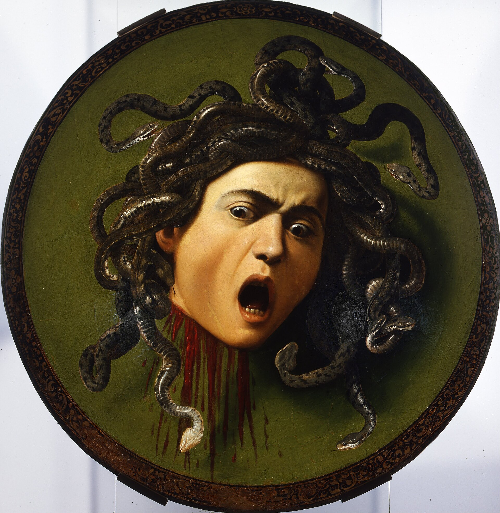

Se cree que Caravaggio usó
su propio rostro
para pintarla.
Medusa convertía en piedra a
quien la mirara
.
La pintó sobre un escudo: el
reflejo
que salvó a Perseo.
CARAVAGGIO · MEDUSA · c. 1597 · UFFIZI